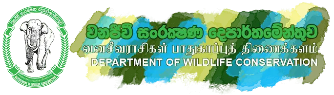
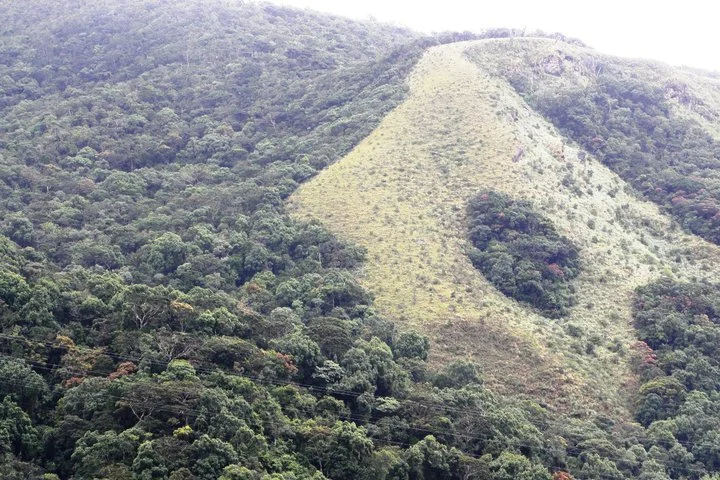
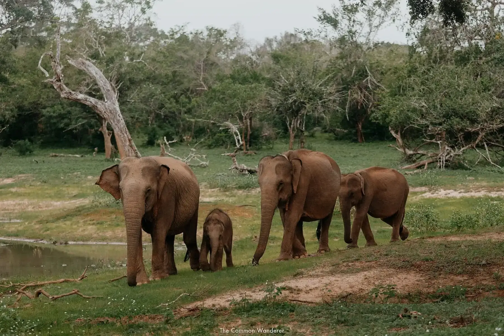

Home
Sri Lankan wildlife introduction
Department of Wildlife Conservation
Sri Lankan Leopard
Animals in Sri Lanka
Yala National Park
Wilpattu National Park
Introduction to department of wildlife conservation

Protected by department of wildlife conservation
 